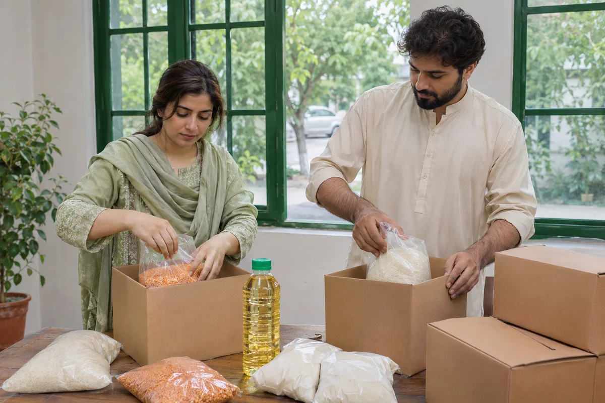

Thoughtful giving starts with clear information.
AMANAT is a Community Donation Drive Manager for Islamabad and Rawalpindi. It connects a donor’s intended contribution with a specific requirement, a collection hub and an available receiving window.
This CS344 student project demonstrates donation coordination using HTML, CSS and JavaScript. Records stay in your browser. It is a fictional service, with no real payments, collections or transport.
Before you donate.
A few useful answers before your first pledge.
Read donor governance →01 Quality & expiry rules for dry rations
Use sealed, non-perishable packs with readable batch labels and at least six months of remaining shelf life. Keep flour, pulses and cooking oil separated from cleaning products. The selected drive's acceptance rule takes precedence; fresh meals and damaged tins are not accepted.
02 How the hub time-slot conflict system works
Each hub accepts two bookings per date and time window. A third booking is blocked, and the desk suggests the next available window that day. Revoking a pledge releases its reservation immediately. All times are Pakistan Standard Time; this prototype checks this browser's records only.
03 Heavy cargo (>50 kg) volunteer truck dispatch
Cargo at or above 50 kg is eligible for a free pickup request in this simulation. The reservation still consumes a hub slot for unloading. A coordinator would confirm transport within two operational hours; a receipt alone does not confirm a vehicle. This classroom app sends no pickup request.
04 University community service credit verification
Keep the pledge reference and request a signed physical handover record from an authorized university coordinator. Hours depend on the institution's rules and actual service performed. A demonstration receipt does not award or verify community service credit.
05 Deficit re-allocation protocol
The quantity field normally caps your pledge at the remaining requirement. Use the explicit surplus option for a planned excess batch, then discuss re-allocation with a coordinator. To change a recorded allocation here, revoke it and register a new pledge. The ledger never silently moves your units to another drive.
Accountability has an address.
SAMPLE CONTACT EXTENSIONS
